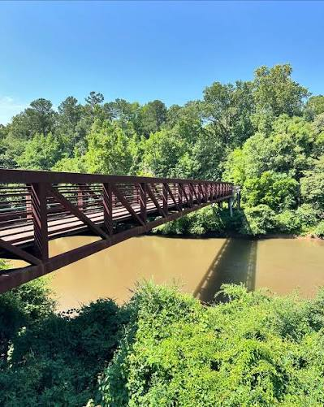
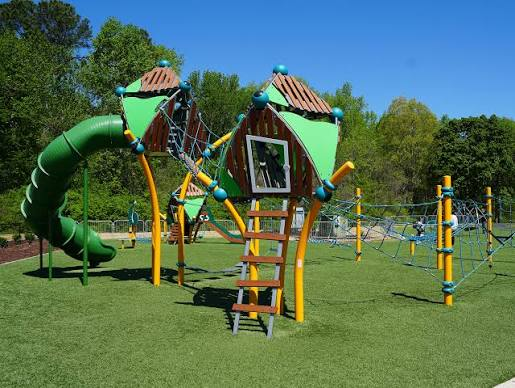

Clayton River Walk on the Neuse
Enjoy a peaceful walk along the Neuse River. The River Walk offers scenic views, paved trails, and opportunities to enjoy the outdoors.
Great for walking, biking, and enjoying nature.
Your guide to local places, good food, and small-town charm.
Whether you enjoy spending time outdoors, exploring local attractions, or finding activities for the family, Clayton has plenty of ways to enjoy your day.

Enjoy a peaceful walk along the Neuse River. The River Walk offers scenic views, paved trails, and opportunities to enjoy the outdoors.
Great for walking, biking, and enjoying nature.

A great place for families to spend time outside. The park features recreational spaces, playgrounds, and areas to enjoy outdoor activities.
Great for families, picnics, and outdoor fun.
Take a stroll through downtown Clayton and explore its local businesses, shops, restaurants, and community events.
Great for exploring local shops and community events.
Bring comfortable walking shoes, take your time exploring, and enjoy everything Clayton has to offer.
Looking for somewhere to eat? Explore local dining.